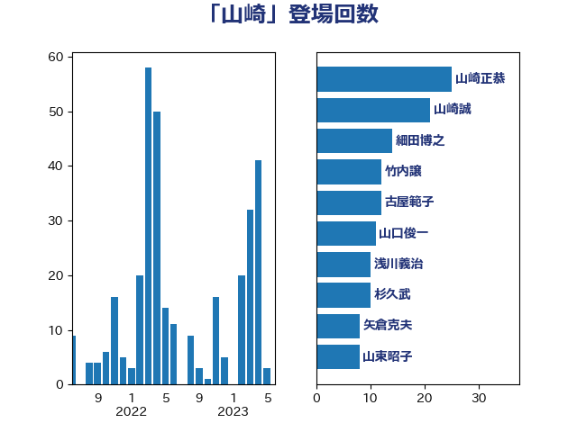

単語「山崎」

| 山崎正恭 | 公明党 | 25 回 |
| 山崎誠 | 立憲民主党 | 21 回 |
| 細田博之 | 自由民主党 | 14 回 |
| 竹内譲 | 公明党 | 12 回 |
| 古屋範子 | 公明党 | 12 回 |
| 山口俊一 | 自由民主党 | 11 回 |
| 浅川義治 | 日本維新の会 | 10 回 |
| 杉久武 | 公明党 | 10 回 |
| 矢倉克夫 | 公明党 | 8 回 |
| 山東昭子 | 自由民主党 | 8 回 |
| 橋本岳 | 自由民主党 | 6 回 |
| 足立康史 | 日本維新の会 | 5 回 |
| 塚田一郎 | 自由民主党 | 5 回 |
| 阿部知子 | 立憲民主党 | 4 回 |
| 義家弘介 | 自由民主党 | 4 回 |
| 石井章 | 日本維新の会 | 4 回 |
| 玄葉光一郎 | 立憲民主党 | 4 回 |
| 末松信介 | 自由民主党 | 4 回 |
| 小里泰弘 | 自由民主党 | 4 回 |
| 大野敬太郎 | 自由民主党 | 4 回 |
| 井上貴博 | 自由民主党 | 4 回 |
| 鶴保庸介 | 自由民主党 | 3 回 |
| 石橋通宏 | 立憲民主党 | 3 回 |
| 田嶋要 | 立憲民主党 | 3 回 |
| 木原稔 | 自由民主党 | 3 回 |
| 尾辻秀久 | 無所属 | 3 回 |
| 小野泰輔 | 日本維新の会 | 3 回 |
| 宮本徹 | 日本共産党 | 3 回 |
| 鷲尾英一郎 | 自由民主党 | 2 回 |
| 高木毅 | 自由民主党 | 2 回 |
| 青山周平 | 自由民主党 | 2 回 |
| 鈴木宗男 | 日本維新の会 | 2 回 |
| 鈴木俊一 | 自由民主党 | 2 回 |
| 金子恭之 | 自由民主党 | 2 回 |
| 西村明宏 | 自由民主党 | 2 回 |
| 萩生田光一 | 自由民主党 | 2 回 |
| 荒井優 | 立憲民主党 | 2 回 |
| 笠井亮 | 日本共産党 | 2 回 |
| 秋葉賢也 | 自由民主党 | 2 回 |
| 福島伸享 | 無所属 | 2 回 |
| 熊田裕通 | 自由民主党 | 2 回 |
| 漆間譲司 | 日本維新の会 | 2 回 |
| 海江田万里 | 立憲民主党 | 2 回 |
| 永岡桂子 | 自由民主党 | 2 回 |
| 斎藤嘉隆 | 立憲民主党 | 2 回 |
| 山口壯 | 自由民主党 | 2 回 |
| 山井和則 | 立憲民主党 | 2 回 |
| 小田原潔 | 自由民主党 | 2 回 |
| 大岡敏孝 | 自由民主党 | 2 回 |
| 堀井巌 | 自由民主党 | 2 回 |
| 堀井学 | 自由民主党 | 2 回 |
| 黄川田仁志 | 自由民主党 | 1 回 |
| 高良鉄美 | 無所属 | 1 回 |
| 高橋千鶴子 | 日本共産党 | 1 回 |
| 高木啓 | 自由民主党 | 1 回 |
| 野村哲郎 | 自由民主党 | 1 回 |
| 遠藤良太 | 日本維新の会 | 1 回 |
| 西村康稔 | 自由民主党 | 1 回 |
| 篠原孝 | 立憲民主党 | 1 回 |
| 穀田恵二 | 日本共産党 | 1 回 |
| 稲富修二 | 立憲民主党 | 1 回 |
| 福岡資麿 | 自由民主党 | 1 回 |
| 石川大我 | 立憲民主党 | 1 回 |
| 渡辺博道 | 自由民主党 | 1 回 |
| 浮島智子 | 公明党 | 1 回 |
| 江藤拓 | 自由民主党 | 1 回 |
| 根本匠 | 自由民主党 | 1 回 |
| 松本剛明 | 自由民主党 | 1 回 |
| 木原誠二 | 自由民主党 | 1 回 |
| 斉藤鉄夫 | 公明党 | 1 回 |
| 徳永久志 | 立憲民主党 | 1 回 |
| 平木大作 | 公明党 | 1 回 |
| 山本香苗 | 公明党 | 1 回 |
| 山本順三 | 自由民主党 | 1 回 |
| 小熊慎司 | 立憲民主党 | 1 回 |
| 宮本岳志 | 日本共産党 | 1 回 |
| 宮内秀樹 | 自由民主党 | 1 回 |
| 務台俊介 | 自由民主党 | 1 回 |
| 加田裕之 | 自由民主党 | 1 回 |
| 伊藤忠彦 | 自由民主党 | 1 回 |
| 伊藤孝江 | 公明党 | 1 回 |
| 中根一幸 | 自由民主党 | 1 回 |
| たがや亮 | れいわ新選組 | 1 回 |